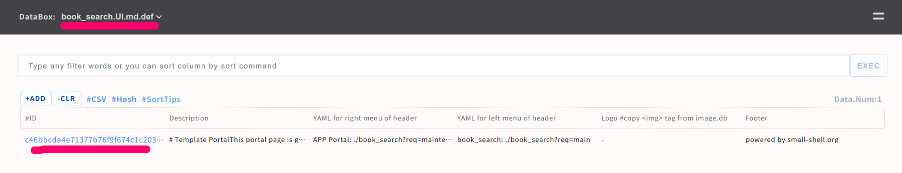

Cook book
In this course, you can learn how utilize APPs { Base APP, Scratch APP, Form } and recipe of design change of HTML/CSS descriptor.also you can learn how to use utilities such like ssl cert deploy automation, enable replication with several hosts and so on.
Cook prototype APP
In this prototype APP construction work, these APPs in the chart will be created.
| Name | Type | Databox | User | Purpose |
|---|---|---|---|---|
| - | Base APP | ALL | Admin | Manage ALL data as admin #need key authentication |
| book_search | Scratch APP | book.master | End user | Allow limitted access to the master data |
| location_search | Sub APP of book_search | book.res | End user | Allow limitted access to the resource and location data |
| booking_req | Form | request.db | End user | Provide request Form to end user |
Here is sample code of above APPs. it will be explained step by step in this section.
Create Databox
3 databoxes will be used for the prototype APP. "book.master" will be master data of book information, "book.res" is resource information including location information each resource, and "request.db" is databox for putting request from end user.
# db relation
book.master <-reference- book.res <--reference-- request.db
# detail
1. book.master { name: text, isbn: num, author: text, category: select, desciption: textarea, available: checkbox}
2. book.res { hashid, name: pdls(book.master), location: select, status: select}
3. request.db { hashid, requester: text, email: email, book_name: text, status: select, book_resource: pdls(book.res), message: textarea }
Import databox
Import databox, using db.def
cd $HOME
git clone https://github.com/21it-org/21it.git
cd 21it/templates/cookbook/def
sudo /usr/local/small-shell/util/scripts/bat_gen.sh ./book_master.def
sudo /usr/local/small-shell/util/scripts/bat_gen.sh ./book_res.def
sudo /usr/local/small-shell/util/scripts/bat_gen.sh ./request.db.def
Launch Base APP
Launch Base APP by refering to Quick start
$ sudo /usr/local/small-shell/adm/gen -app
Type of APP (1.BASE | 2.FORM | 3.SCRATCH): 1
#-> Dialog will be started, for making Base APP
Create scratch APP
Once databoxes and Base APP is created, let's move on to create APPs.
Create Main APP
$ sudo /usr/local/small-shell/adm/gen -app
Type of APP (1.BASE | 2.FORM | 3.SCRATCH): 3
APP Name: book_search
Type of Authentication (1.shared pass | 2.user key | 3.other | 4.none): 4
Primary databox: book.master
Add sub APP
Add databox to Main APP by utilizing sub APP. this sub APP is used for searching book resource and location.
$ sudo /usr/local/small-shell/adm/gen -app
Type of APP (1.BASE | 2.FORM | 3.SCRATCH): 3
APP Name: location_search@book_search
Subapp databox: book.res
Cook APP
Once APPs are generated, let's modify them 1 by 1. you can check sample code as reference
update portal
Portal page of book_search can be editted by both markdown grammer and legacy HTML tag, detail is in Cook main page section. you can also update menu of book_search on the Base APP.

Insert code to description
In this prototype APP, very simple description is written on the portal as below. it's using both HTML tag and markdown.
<h1>This is book search APP. you can search and request book for lending on this APP.</h1>
STEP1: Search book from table
STEP2: Request from book page, then you can get your request link
STEP3: Message will be updated once admin check your request on your link, then you can get the book when you come to office
<a href="./book_search?req=table"><button class="button">Search</button></a>
Updated portal is here.
Add logics to the APP
In this example, adding following functions to book_search APP
- Add link from master data to resource table
- Filter table to show only available data
- Restrict key
- Add link from resource data to master data
Add link from master data to resource table
Meta command can generate link that can be used in html.def.
# generate link of location_search(subapp)
$ sudo -u small-shell /usr/local/small-shell/bin/meta get.link:location_search@book_search
APP:location_search@book_search
Table: <a href="./book_search?%%session&subapp=location_search&req=table">link</a>
DATA.new: <a href="./book_search?%%session&subapp=location_search&req=get&id=new">link</a>
DATA.$id: <a href="./book_search?%%session&subapp=location_search&req=get&id=$id">link</a>
then copy and paste to action link field with adding "table_command=%%book_name" for filtering table with book name.
$ sudo vi /var/www/descriptor/book_search_get_ro.html.def
--code--
<div class="action_links">
<!-- add following line -->
<span><a href="./book_search?%%session&subapp=location_search&req=table&table_command=%%book_name"><p>location table</p></a></span>
</div>
--------
To insert %%book_name in above action link, need to add these logics to get action.
Note
If you insert sed or awk in codes, it's recommended to used $SED and $AWK value. the parameter is defined at /usr/local/small-shlel/global.conf
$ sudo vi /var/www/bin/book_search_get.sh
# block1 { get ID book_namd }, adding to next line of DATA_SHELL setting
--block1 code--
DATA_SHELL="${small_shell_path}/bin/DATA_shell session:$session pin:$pin app:book_search"
# add block1
book_name=`$DATA_SHELL databox:book.master action:get key:name id:$id format:none | $AWK -F ":" '{print $2}'`
--------
# update render HTML logic as block 2
--block2 code--
# render HTML
cat ../descriptor/${view} | $SED "s/^ *</</g" \
| $SED "/%%common_menu/r ../descriptor/common_parts/book_search_common_menu" \
| $SED "/%%common_menu/d" \
| $SED "/%%dataset/r ../tmp/$session/dataset" \
| $SED "s/%%dataset//g"\
| $SED "/%%history/r ../tmp/$session/history" \
| $SED "s/%%history//g"\
| $SED "s/%%id/$id/g" \
| $SED "s/%%book_name/$book_name/g" \
| $SED "s/%%pdls/session=$session\&pin=$pin\&req=get/g" \
| $SED "s/%%session/session=$session\&pin=$pin/g" \
| $SED "s/%%params/session=$session\&pin=$pin/g"
--------
Filter table to show only available data that is available
To show only available book, add "match" option to show_all command. Following example is replacing show_all command at once using sed command.
# get backup
cp /var/www/bin/book_search_table.sh /var/tmp/book_search_table.sh.org
# replace at once
cat /var/www/bin/book_search_table.sh | sed "s/command:show_all/command:show_all[match=available{yes}]/g" > /var/tmp/new_book_search_table.sh
# check difference
diff /var/www/bin/book_search_table.sh /var/tmp/new_book_search_table.sh
# overwrite
sudo mv /var/tmp/new_book_search_table.sh /var/www/bin/book_search_table.sh
sudo chmod 755 /var/www/bin/book_search_table.sh
sudo chown small-shell:small-shell /var/www/bin/book_search_table.sh
Then let's modify line calculation logic as well.
$ sudo vi /var/www/bin/book_search_table.sh
# comment out original line
#line_num=`$META get.num:$databox`
# insert new line
line_num=`$DATA_SHELL databox:$databox command:show_all[match=available{yes}][sort=${sort_option},${sort_col}] format:none | wc -l | tr -d " "`
Restrict key
To restrict accessable key, change "all" to specific keys.
$ sudo vi /var/www/bin/location_search_get.sh
# -> change keys from "all" to specific keys.
keys="hashid,name,location"
$ sudo vi /var/www/bin/location_search_table.sh
# -> change keys from "all" to specific keys.
keys="hashid,name,location"
Add link from resource data to master data
To connecing APPs each other, execute meta command again.
# generate link of book_search(parent app)
$ sudo -u small-shell /usr/local/small-shell/bin/meta get.link:book_search
APP:book_search
Table: <a href="./book_search?%%session&req=table">link</a>
DATA.new: <a href="./book_search?%%session&req=get&id=new">link</a>
DATA.$id: <a href="./book_search?%%session&req=get&id=$id">link</a>
then copy and past the link to action_link field.
$ sudo vi /var/www/descriptor/location_search_get_ro.html.def
--code--
<div class="action_links">
<!-- add following line -->
<span><a href="./book_search?%%session&req=get&id=%%book_id"><p>Master data</p></a></span>
</div>
--------
To insert %%book_id to action_link, let's modify render logics to get action.
$ sudo vi /var/www/bin/location_search_get.sh
--code--
# render HTML
resource_id=$id
book_name=`$DATA_SHELL databox:book.res action:get key:name id:$id format:none | $AWK -F ":" '{print $2}'`
book_id=`$DATA_SHELL databox:book.master command:show_all[match=name{$book_name}] format:json | jq '.[] | .id'| $SED -s "s/\"//g"`
cat ../descriptor/${view} | $SED "s/^ *</</g" \
| $SED "/%%common_menu/r ../descriptor/common_parts/book_search_common_menu" \
| $SED "/%%common_menu/d" \
| $SED "/%%dataset/r ../tmp/$session/dataset" \
| $SED "s/%%dataset//g"\
| $SED "/%%history/r ../tmp/$session/history" \
| $SED "s/%%history//g"\
| $SED "s/%%id/$id/g" \
| $SED "s/%%book_id/$book_id/g" \
| $SED "s/%%pdls/session=$session\&pin=$pin\&req=get/g" \
| $SED "s/%%session/session=$session\&pin=$pin/g" \
| $SED "s/%%params/subapp=location_search\&session=$session\&pin=$pin/g"
--------
Generate form
Form for requesting book exmpale is as following.
$ sudo /usr/local/small-shell/adm/gen -app
Type of APP (1.BASE | 2.FORM | 3.SCRATCH): 2
result of dialog
APP Type: 2.FORM
Form Name: booking_req
Target Databox: request.db
Description: This is request Form for booking library
IP_whitelisting: no
Included keys: requester,email,book_name
Access URL: https://**-**-**/booking_req
Cook Form
Once Form APP is generated, let's add these additional functioncs to the code.
- Insert book name using QUERY STRING
- Booking 1 resource which is available and searchable in book.master
- Change status of other databoxes, #book.master #book.res
update controller
Controller can load any query string in the URL and it can pass the parameter to action script. in this example, controller will pass book_name additionally to get.sh
$ sudo vi /var/www/cgi-bin/booking_req
--code--
# comment out original line
#/var/www/bin/booking_req_get.sh session:$session pin:$pin id:$id remote_addr:${remote_addr};;
# insert new line
/var/www/bin/booking_req_get.sh session:$session pin:$pin id:$id remote_addr:${remote_addr} book_name:${book_name} ;;
--------
update get logic of action script
For the next, update action script to insert book name.
$ sudo vi /var/www/bin/booking_req_get.sh
# block1 logic next line of id param loading.
--code--
if [[ $param == id:* ]]; then
id=`echo $param | $AWK -F":" '{print $2}'`
fi
# add block1
if [[ $param == book_name:* ]]; then
book_name=`echo $param | $AWK -F":" '{print $2}'`
fi
--------
# block2, modify gen new logic. in this example, original line is comment out and new line is inserted
--code--
# gen reqd/write form #new
# comment out original line
#$DATA_SHELL databox:request.db action:get id:$id keys:requester,email,book_name format:html_tag > /var/www/tmp/$session/dataset
# insert line new lines
$DATA_SHELL databox:request.db action:get id:$id keys:requester,email,book_name format:html_tag > ../tmp/$session/dataset.0.1
cat ../tmp/$session/dataset.0.1 \
| $SED "s/name=\"book_name\" value=\"\"/name=\"book_name\" value=\"$book_name\"/g" > ../tmp/$session/dataset
--------
Add reserve button for book_search APP
Add reserve button that will link to booking_req Form with book_name. the Query string in the URL will be handled by Form controller.
$ sudo vi /var/www/descriptor/book_search_get_ro.html.def
--code--
<a href="./booking_req?book_name=%%book_name"><button class="button">Reserve</button></a>
--------
Once you click Reserve button, request Form must contain book information as following.
Finalize APP
Update Set logic of request Form
Basially "set logic" of request Form will update only request.db. but in this example, "set logic" will update book.res data as well to prevent double booking.
1st step is just comment out original logic.
$ sudo vi /var/www/bin/booking_req_set.sh
--code--
# push datas to databox
#$DATA_SHELL databox:request.db action:set id:$id keys:$keys input_dir:/var/www/tmp/$session > /var/www/tmp/$session/result
# result check
#updated_id=`cat /var/www/tmp/$session/result | grep "^successfully set" | $AWK -F "id:" '{print $2}' | $SED '/^$/d' | sort | uniq`
--------
2nd step is to insert new lines right after original logic that was comment out.
$ sudo vi /var/www/bin/booking_req_set.sh
--code--
# load book resource
book_name=`cat ../tmp/$session/book_name`
resource_id=`$DATA_SHELL databox:book.res command:show_all[match=name{$book_name}][filter=status{on{%%%%%%%}the{%%%%%%%}shelve}] format:json \
| jq '.[] | .id'| $SED -s "s/\"//g" | head -1`
if [ "$resource_id" ];then
# push datas to databox
echo "$resource_id" > ../tmp/$session/book_resource_id
echo "requested" > ../tmp/$session/status
keys="book_resource_id,status,$keys"
$DATA_SHELL databox:request.db action:set id:new keys:$keys input_dir:../tmp/$session > ../tmp/$session/result
# result check
updated_id=`cat ../tmp/$session/result | grep "^successfully set" | $AWK -F "id:" '{print $2}' | $SED '/^$/d' | sort | uniq`
avail_num=`$DATA_SHELL databox:book.res command:show_all[match=name{$book_name}][filter=status{on{%%%%%%%}the{%%%%%%%}shelve}] format:none | wc -l`
if [ "$updated_id" -a $avail_num -ge 1 ];then
# update staus of resource.db
$DATA_SHELL databox:book.res action:set id:$resource_id key:status value:reserved >> ../tmp/$session/result
# update status of book.master
(( avail_num -= 1 ))
if [ $avail_num -eq 0 ];then
book_master_id=`$DATA_SHELL databox:book.master command:show_all[match=name{$book_name}] format:json | jq '.[] | .id'| $SED -s "s/\"//g"`
$DATA_SHELL databox:book.master action:set id:$book_master_id key:available value:- >> ../tmp/$session/result
fi
fi
fi
Add status and message to end user page
Originally Form contained only these fields { requester,email,book_name} but end user msut want to know the booking status. so lets show these messages.
before adding logic request

$ sudo vi /var/www/bin/booking_req_get.sh
--code--
# gen read only contents
# comment out original lines
#$DATA_SHELL databox:request.db action:get id:$id keys:requester,email,book_name format:none > /var/www/tmp/$session/dataset.0.1
#cat /var/www/tmp/$session/dataset.0.1 | $SED "s/^/<li><label>/g" | $SED "s/:/<\/label><pre>/1" | $SED "s/$/<\/pre><\/li>/g" \
#| $SED "s/<pre><\/pre>/<pre>-<\/pre>/g" | $SED "s/_%%enter_/\n/g" > /var/www/tmp/$session/dataset
# insert new lines
$DATA_SHELL databox:request.db action:get id:$id keys:requester,email,book_name,status,message format:none | grep -v hashid > ../tmp/$session/dataset.0.1
cat ../tmp/$session/dataset.0.1 | $SED "s/^/<li><label>/g" | $SED "s/:/<\/label><pre>/g" | $SED "s/$/<\/pre><\/li>/g" \
| $SED "s/<pre><\/pre>/<pre>-<\/pre>/g" | $SED "s/_%%enter_/\n/g" > ../tmp/$session/dataset
--------
updated image
Cook Job for the APP
In thie example, create job for updating available status. this job will be effective in the case that book was returned to shelve but admin missed to set available on book.master even if admin updated book.res status to on the shelve. job will check inconsistency between book.master and correct it accordingly.
Create batch script
You can use small-shell basic parameters and sys user's key if you put script to util/scripts dir. by the way sys user is default user that will be created automatically when execute gen command.
sudo vi /usr/local/small-shell/util/scripts/status_update.sh
copy and paste these codes. this script will work as e-cron job. By the way underba is meta charactor of small-shell. you need to use {%%%%%%%} instead. I mean on{%%%%%%%}the{%%%%%%%}shelve} will be translated to on_the_shelve. for more detail, please check meta charactor
#!/bin/bash
#-------------------------------------------------------------
# This is the script for update status of book.master
#-------------------------------------------------------------
# global.conf load
SCRIPT_DIR=`dirname $0`
. ${SCRIPT_DIR}/../../global.conf
# load authkey
. ${SCRIPT_DIR}/.authkey
WHOAMI=`whoami`
if [ ! "$WHOAMI" = "small-shell" ];then
echo "error: user must be small-shell"
exit 1
fi
# dump non available books
$ROOT/bin/DATA_shell authkey:$authkey databox:book.master command:show_all[keys=id,name][match=available{-}] format:csv \
> ${SCRIPT_DIR}/tmp/book_master_dump.tmp
# check latest resource status
count=1
while read line
do
if [ $count -gt 1 ];then
book_id=`echo $line | $AWK -F "," '{print $1}'`
book_name=`echo $line | $AWK -F "," '{print $2}'`
# check on_the_shelve book
check_shelv=`$ROOT/bin/DATA_shell authkey:$authkey databox:book.res \
command:show_all[match=name{$book_name}][filter=status{on{%%%%%%%}the{%%%%%%%}shelve}] format:none`
if [ "$check_shelv" ];then
# update available status
$ROOT/bin/DATA_shell authkey:$authkey databox:book.master action:set id:$book_id key:available value:yes
echo "$ROOT/bin/DATA_shell authkey:$authkey databox:book.master action:set id:$book_id key:available value:yes"
fi
fi
((count += 1))
done < ${SCRIPT_DIR}/tmp/book_master_dump.tmp
exit 0
Change permission and ower of the script
sudo cdmod 755 /usr/local/small-shell/util/scripts/status_update.sh
sudo chown small-shell:small-shell /usr/local/small-shell/util/scripts/status_update.sh
Change system user permission from read only to read/write
Before executing the job, please change sys user permission from ro to rw.
sudo /usr/local/small-shell/adm/ops set.attr:sys{rw}
Push job to small-shell
Once script are created, make e-cron job as following. as for detail e-cron, please check here tour.
sudo /usr/local/small-shell/adm/gen -job
Dialog will be started.
Job Name: book_master_status_update
Type of job (1.job automation | 2.file exchange) : 1
--Define schedule--
Month [ any | 1-12 ]: any
Date [ any | 1-31 ]: any
Hour [ any | 0-23 ]: 1
Min [ any | 0-59 ]: 0
Week [ any | mon - sun ]: any
Exec command or batch script: status_update.sh
Enable job
sudo -u small-shell /usr/local/small-shell/bin/e-cron enable.book_master_status_update
Job check
# check list
$ sudo -u small-shell /usr/local/small-shell/bin/e-cron ls
--------------------------------------------------------------
job definition: /usr/local/small-shell/util/e-cron/def
--------------------------------------------------------------
book_master_status_update.enabled
del_session.enabled
del_util_log.enabled
# exec manually
$ sudo -u small-shell /usr/local/small-shell/bin/e-cron exec.book_master_status_update
book_master_status_update successfully completed
# check status
$ sudo -u small-shell /usr/local/small-shell/bin/e-cron stat
--------------------------------------------------------
LATEST STATUS OF JOB
--------------------------------------------------------
2022-03-20 00:05:01 del_util_log successfully completed
2022-03-20 02:45:41 book_master_status_update successfully completed
2022-03-20 02:46:01 del_session successfully completed
Once job is implemented, your prototype APP deployment is completed. please use it and have a fun!
Set notification mail
In this section, you can learn how to add notification mail to inquiry Form of Team APP . you can add same code to any Form APP.
Note
please set MTA such like postfix beforehand
Let's add code to inquiry_set.sh
# install mail comamnd
sudo apt install mailutils
then please add these codes just before session removal logic.
sudo vi /var/www/bin/inquiry_set.sh
# ---start insert code ----
notification_addr="to_addr@XXXX.com"
sender_addr="from_addr@XXXX.com"
. ${small_shell_path}/web/base
echo "inquiry url is here ${base_url}team?subapp=inquiries&req=get&id=$updated_id" | mail -s "New inquiry added through Form" -aFrom:${sender_addr} ${notification_addr}
# ---end of inserted code --
if [ "$session" ];then
rm -rf /var/www/tmp/$session
fi
Then you can get notification mail from inquiry APP when end user submit inquiry through Form. you can insert above code to any set action script of Form APPs or Scratch APPs.
Portal design recipe
In this section, you can learn how you can change design of main page of your APP. let's create main page with no authentication and no databox for making the easiest example. of course any type of authentication can be selected and any databox can be attached.
$ sudo /usr/local/small-shell/adm/gen -app
Type of APP (1.BASE | 2.FORM | 3.SCRATCH): 3
app_name: static_site
Type of Authentication (1.shared pass | 2.user key | 3.other | 4.none): 4
primary databox: none
Cook main page
Let's start to cook main page. you can edit the page by 2 way. 1 is edit the page on Base APP {$APP_UI.md.def} web UI, then portal page could be generated.
Update $app.UI.md.def on Base APP

You can update description using both markdown and legach HTML.
please check the markdown grammer here if needed.
also you can update menu,logo and footer of portal on the same admin page.

HTML/CSS Grammar
Another way of updating portal is just editting hml.def directly {$APP_main.html.def}
sudo vi /var/www/descriptor/static_site_main.html.def
Note
Please update under "main" class, then you can use light css framework
Update left header
You can modify links and logo to the left header, in this example link to Docs is added.
! please upload image file to /var/www/html
<div class="left-header">
<a href="https://github.com"><img src="../GitHub-Mark-32px.png"></a>
<a href="https://small-shell.org"><h2>Docs</h2></a>
</div>
Implement flex-table
For implementing table, you must use some classes. table must be contain "flext-table" class. and header should have "flex-table-header" class.
<div class="flex-table">
<ul>
<li class="flex-table-header">
<p>column1</p>
<p>column2</p>
<p>column3</p>
<p>column4</p>
</li>
<li>
<p>data1.column1</p>
<p>data1.column2</p>
<p>data1.column3</p>
<p>data1.column4</p>
</li>
</ul>
</div>
Add internal page link to the left navi
In this example, page will have 3 section including table section.
<div class="left-nav">
<a href="#section1"><p>section1</p></a>
<a href="#section2"><p>section2</p></a>
<a href="#section3><p>section3p></a>
</div>
Use button
Button must have "button" class.
<button class="button">Sample button</button>
Use image
In this example, we would like to use GitHub logo for image. please upload logo to "/var/www/html" that's static site dir. then write down the path to the HTML page.
<a href="https://github.com"><img src="../GitHub-Mark-32px.png"></a>
Update even menu
In this example, links in right header menu will be external links and mail addr.
sudo vi /var/www/descriptor/common_parts/static_site_common_menu
<li><a href="">LINK 1</a></li>
<li><a href="">LINK 2</a></li>
<li><a href="mailto:address">MAIL</a></li>
or If you don't need to use right header, just delete right header definition on $APP_main.html.def
sudo vi /var/www/descriptor/static_site_main.html.def
right header definition on main.html.def
<div class="right-header">
<button class="even-btn-menu">=</button>
<nav>
<ul>
%%common_menu
</ul>
</nav>
</div>
Add footer
Please use footer class for making footer.
<div class="footer">
<p>powered by small-shell.org</p>
</div>
Implement form
If you want to implement form, it's recommended to use class="app-form" , please check following example.
<div class="app-form">
<h1>#new</h1>
<form method="post" action="" onclick="document.charset='utf-8';">
<ul>
<li>
<label>name</label>
<input type="text" name="name" value="" required>
</li>
<li>
<label>description</label>
<input type="text" name="description" value="" >
</li>
</ul>
</div>
Change color
You can change color by updating $APP.css.def
sudo vi /var/www/descriptor/static_site.css.def
#----------------classes---------------#
# Change header color
.flex-header
# Change right menu charactor
.right-header a
# Change right menu background and border color
.right-header nav
.right-header nav.open-menu
# Change right header button (=)
.right-header .even-btn-menu
# Change button
.main button
# Change table header of main
.main .flex-table-header
#----------------------------------------#
Distribute the site to static directory
You can export main page as static stie. then please copy the html to /var/www/html or other static directory.
sudo /usr/local/small-shell/util/scripts/dist.sh $APP $EXPORT_DIR
Automate SSL cert deployment
In this cook, you can learn how to automate cert deployment by using Let's Encrypt as ssl certificate provider. please install certbot first.
Install certbot
sudo snap install core
sudo snap refresh core
sudo snap install --classic certbot
sudo ln -s /snap/bin/certbot /usr/bin/certbot
Note
A record of the domain must be set on DNS server beforehand. and it must be global IP that can be reachable from Let's encrypt server
Install nginx for reverse proxy
It's required to install nginx package with no configuration to use as reverse proxy later.
sudo apt install nginx
Generate Base APP
Base APP that will use small-shell WEB srv should be launched as http server not https so far. FQDN must be same as A record that you set beforehand on your DNS server.
$ sudo /usr/local/small-shell/adm/gen -app
Type of APP (1.BASE | 2.FORM | 3.SCRATCH): 1
Type of server (1.small-shell WEB srv | 2.other WEB srv): 1
protocol (http | https): http
WEB Server FQDN or IP addr (e.g. 192.168.10.1): $FQDN
Import job and deploy ssl certificate
Once you install certbot and launched Base APP, please kick configure.sh and deploy.sh. then dialog will be started. please answer your mail address that is reqiured to publish certificate by Let's Encrypt
cd $HOME
git clone https://github.com/naruoken/small-shell-apps
cd ./small-shell-apps/ssl_auto
chmod 755 *.sh
sudo ./configure.sh
sudo ./deploy.sh
dialog
Following is exmaple of dialog.
small-shell root (/usr/local/small-shell):
Saving debug log to /var/log/letsencrypt/letsencrypt.log
Enter email address (used for urgent renewal and security notices)
(Enter 'c' to cancel): ****@***.com
- - - - - - - - - - - - - - - - - - - - - - - - - - - - - - - - - - - - - - - -
Please read the Terms of Service at
https://letsencrypt.org/documents/LE-SA-v1.3-September-21-2022.pdf. You must
agree in order to register with the ACME server. Do you agree?
- - - - - - - - - - - - - - - - - - - - - - - - - - - - - - - - - - - - - - - -
(Y)es/(N)o:Y
- - - - - - - - - - - - - - - - - - - - - - - - - - - - - - - - - - - - - - - -
Would you be willing, once your first certificate is successfully issued, to
share your email address with the Electronic Frontier Foundation, a founding
partner of the Let's Encrypt project and the non-profit organization that
develops Certbot? We'd like to send you email about our work encrypting the web,
EFF news, campaigns, and ways to support digital freedom.
- - - - - - - - - - - - - - - - - - - - - - - - - - - - - - - - - - - - - - - -
(Y)es/(N)o: Y
Account registered.
Requesting a certificate for ***.com
If everything is no problem, https will be enabled automatically by deploy.sh. by the way configure.sh will set up reverse proxy using nginx package.
Add Sudoer
You must add following setting on sudoers to execute SSL refresh job regularly.
$ sudo visudo
# add following to bottom of the file, if there is no small-shell entry
small-shell ALL=(ALL:ALL) NOPASSWD: /usr/local/small-shell/adm/*, /usr/local/small-shell/util/scripts/*
Check job
Once deploy is completed, ssl job that will refresh ssl cert will be on e-cron.
$ sudo -u small-shell /usr/local/small-shell/bin/e-cron ls | grep ssl
ssl_auto.enabled
If it's enabled SSL implementation is completed.
Make replica for load balancing
Small-Shell WEB APPs and databoxes can be synced to replica hosts and it can be put under load balancer. load balander must be setup beforehand on cloud env or physical env.
Requirement of load balancing
Please be aware that load balancer must ensure session persistence. And load balancing logic must be just TCP port proxy (not terminate SSL/TLS) because write request will go to real server FQDN of master server directly. it's recommended to use wild card certificate or automated certificate. implement procedure of automated certificate will be explained later step.
Read Req > Load Balancer # ensure session persistence
TCP port forwarding
| - Master host #response on 80,443 port
|- Replica hosts #response on 80,443 port
Write Req > Load Balancer # ensure session persistence
TCP port forwarding
| - Master host #response on 80,443 port
|- Replica hosts > it will be redirected to real server FQDN of master host
Setup environment
Before build replica, you need to setup Base APP using small-shell WEB srv on both master and replica server. when input server FQDN, please input real server FQDN (I mean not load balancing address) and protocol should be http so far not https.
@master
sudo apt install lsyncd
sudo mkdir /etc/lsyncd
sudo apt install nginx
sudo /usr/local/small-shell/adm/gen -app #Base APP (required), Scratch APP (optional)
@replica
sudo apt install nginx
sudo /usr/local/small-shell/adm/gen -app #Base APP (required)
Get key
Then let's get key to communicate between master and replica. "show.pub" option will show the key. please copy the key. it must be paste next STEP. When you execute mkrep.sh with the option first time, PATH of the key will be confirmed. it must be /home/small-shell/.ssh/id_rsa.
@master @replica
sudo /usr/local/small-shell/util/scripts/mkrep.sh show.pub
Generating public/private rsa key pair.
Enter file in which to save the key (/home/small-shell/.ssh/id_rsa): <Enter>
Build Replication
Once key is ready, replication can be built by "reg" option. you must answer the dialog and paste public key that you get beorehand.
@master
sudo /usr/local/small-shell/util/scripts/mkrep.sh reg.replica
> dialog will be started
@replica
sudo /usr/local/small-shell/util/scripts/mkrep.sh reg.master
> dialog will be started
Automated deployment of SSL cert for load balancing
To enable https, it's recommended to use ssl auto script as following step. please check details of automation setting on Deploy auto SSL cetificate.
@master
cd $HOME
git clone https://github.com/naruoken/small-shell-apps
cd ./small-shell-apps/ssl_auto
chmod 755 *.sh
sudo ./configure.sh
sudo ./deploy.sh
@replica
cd $HOME
git clone https://github.com/naruoken/small-shell-apps
cd ./small-shell-apps/ssl_auto
chmod 755 *.sh
sudo ./configure.sh
sudo ./deploy.sh
Create users for APPs
Once replication and SSL is ready, please create users for APPs.
sudo /usr/local/small-shell/adm/ops add.usr:$user #Base APP
sudo /usr/local/small-shell/adm/ops add.usr:$user app:$app #Scratch APP
Add new APP or rebuild replication.
If you will add new APP after starting replication or rebuild replication for adding new host, please remove all replication setting with purge option.
@master @replica_hosts
sudo /usr/local/small-shell/util/scripts/mkrep.sh purge
sudo /usr/local/small-shell/util/scripts/mkrep.sh show.pub
@master
sudo /usr/local/small-shell/adm/gen -app #create new APP
sudo /usr/local/small-shell/util/scripts/mkrep.sh reg.replica
@replica_hosts
sudo /usr/local/small-shell/util/scripts/mkrep.sh reg.master
Backup & Restore example
In this cook, 1 production node will send backup to backuo node through e-cron HUB API
| prod node | -- | backup node #e-cron HUB|
Usage of bkup and rstr
sudo /usr/local/small-shell/adm/bkup $dir
sudo /usr/local/small-shell/adm/rstr $dir
Operation at backup node
It's required to Launch Base APP and check e-cron URL and key
@backup_node
sudo /usr/local/small-shell/adm/gen -app
cat /usr/local/small-shell/web/base | grep hubapi
cat /usr/local/small-shell/web/base | grep api_authkey
Operation at production node
Once e-cron HUB is ready,define backup & sync job on pdocution node. bkup command will backup every data of small-shell including user info, databox{data,log}, APP, Job... and sudo privilede is required for executing bkup command. please add sudoers beforehand.
@production_node
$ sudo visudo
# add folowing line, if there is no small-shell entry
small-shell ALL=(ALL:ALL) NOPASSWD: /usr/local/small-shell/adm/*, /usr/local/small-shell/util/scripts/*
# define backup job
$ sudo /usr/local/small-shell/adm/gen -job
Job Name: backup
Type of job (1.job automation | 2.file exchange) : 1
--Define schedule--
Month [ any | 1-12 ]: any
Date [ any | 1-31 ]: any
Hour [ any | 0-23 ]: 0
Min [ any | 0-59 ]: 1
Week [ any | mon - sun ]: any
Exec command or batch script: sudo /usr/local/small-shell/adm/bkup /var/tmp
# define push job, please confirm URL and authkey at backup node beforehand
$ sudo /usr/local/small-shell/adm/gen -job
Type of job (1.job automation | 2.file exchange) : 2
--Define schedule--
Month [ any | 1-12 ]: any
Date [ any | 1-31 ]: any
Hour [ any | 0-23 ]: 1
Min [ any | 0-59 ]: 0
Week [ any | mon - sun ]: any
Type of file exchange (push | get): push
local directory: /var/tmp
file_name: *tar.xz
HUB API URL: $hubapi
API authkey: $api_authkey
Backup file
If bkup/push job works fine, there is backup files on que/file directry on backup node
@backup_node
ls /usr/local/small-shell/util/e-cron/que/file
$server.core.tar.xz $server.ssh.tar.xz $server.www.tar.xz
Restore
For restoring backup file, please install small-shell from git and launch Base APP first. and rstr command option must be directory where backup files are copied from backup node.
@restore_node
sudo /usr/local/small-shell/adm/rstr $dir
Dictionary (create lang pack)
You can create language pack for WEB APP using following template.
cd $HOME
git clone https://github.com/naruoken/small-shell-apps
cd small-shell-apps/dictionary/template
Usage of keywords file
"keywords" file will be used for translating words to your language. please update them. by the way {%%%%%%} is a separator that is used instead of conma.
# at small-shell-apps/dictionary/template
vi keywords
-----
##########################################################
# usage: original_word{%%%%%%}translated_word
##########################################################
ScratchAPP:APP Portal{%%%%%%}
ScratchAPP:Table{%%%%%%}
ScratchAPP:Log Out{%%%%%%}
Your Key is successfully generated.{%%%%%%}
----
Deployment
Once keywords file is updated, deploy it by using deploy.sh
# at small-shell-apps/dictionary/template
./deploy.sh
Log analyzer
You can import job for analyzing log of small-shell web from github.
Link to code is here
cd $HOME
git clone https://github.com/naruoken/small-shell-apps
cd small-shell-apps/ssw_log_analyzer
# Deploy job
sudo ./deploy.sh
confirm imported job
If deploy.sh executed without any error, 1 databox {web_analyer} and 3 job will be imported.
log analyzer
sudo -u small-shell /usr/local/small-shell/bin/e-cron cat.ssw_log_analyzer
> JOB: ssw_log_analyzer
def:/usr/local/small-shell/util/e-cron/def/ssw_log_analyzer.def
-------------SCHEDULE----------------
min: 1
hour: 0
date: any
month: any
week: any
-------------DEFINITION----------------
exec_command="/usr/local/small-shell/util/scripts/ssw_log_analyzer.sh"
input_message=""
output_message="analyzer.done"
hubapi=""
api_authkey=""
attack statistics
sudo -u small-shell /usr/local/small-shell/bin/e-cron cat.attack_statistics
> JOB: pv_statistics
def:/usr/local/small-shell/util/e-cron/def/attack_statistics.def
-------------SCHEDULE----------------
min: 0
hour: 1
date: any
month: any
week: any
-------------DEFINITION----------------
exec_command="/usr/local/small-shell/util/scripts/sumup.sh type:line sumup_key:attack frequency:daily title:attack set_time:\"`date +%Y-%m-%d --date '1 day ago'`\" global_filter:\"`date +%Y-%m-%d --date '1 day ago'`\" databox:web_analyzer"
input_message="analyzer.done"
output_message="attack.done"
hubapi=""
api_authkey=""
uniq access
sudo -u small-shell /usr/local/small-shell/bin/e-cron cat.uniq_statistics
> JOB: uniq_statistics
def:/usr/local/small-shell/util/e-cron/def/uniq_statistics.def
-------------SCHEDULE----------------
min: 10
hour: 1
date: any
month: any
week: any
-------------DEFINITION----------------
exec_command="/usr/local/small-shell/util/scripts/sumup.sh type:line sumup_key:uniq_access frequency:daily title:pv set_time:\"`date +%Y-%m-%d --date '1 day ago'`\" global_filter:\"`date +%Y-%m-%d --date '1 day ago'`\" databox:web_analyzer"
input_message="pv.done"
output_message=""
hubapi=""
api_authkey=""
Confirm result
Job will push the result to the databox named as web_annalyzer. Log analytics target is srvdump.log.1 it means 1 day ago log. you can check the graph on console. using #stats command.